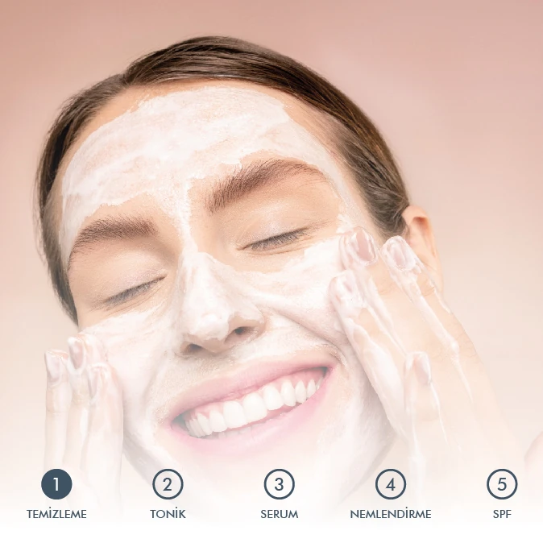
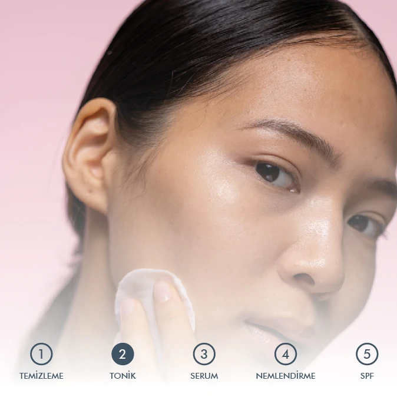
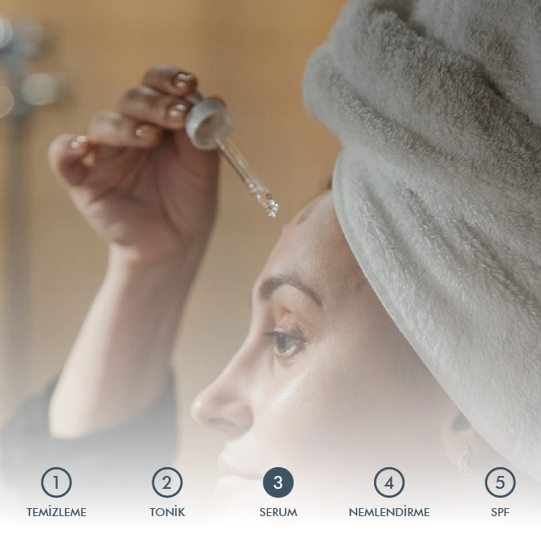
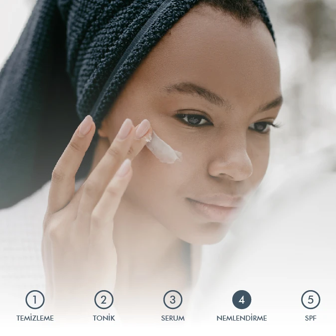
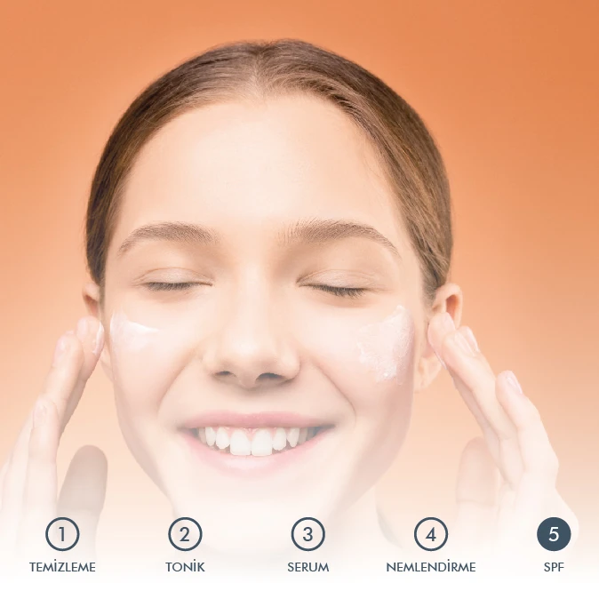

|

|
Cilt Bakımı Rutini
1. ADIM: Cilt Temizliği
Cilt bakım rutinlerinizin temeli cilt temizliğidir.
Ilık su ile birlikte Fruit Enzyme Powder Cleanser
kullanmak cildinizin temizlenmesine yardımcı olacaktır.
İçerdiği meyve asiti parçacıklar sayesinde cildinizi
nazikçe temizler ve arındırır. Cilt yenilenmesi ile
cilt tonu farklılıklarında azalma, gözeneklerde
küçülme ve temizlemenin yanı sıra nem oranının arttırılması
ile ciltte dolgun bir görünüm hedefler. Fruit Enzyme Powder
Exfoliator & Peeling ise içerdiği nazik kimyasal eksfoliyatörler
Azeleic ve Malic Asit sayesinde, yağ, kir, ölü hücre ve makyaj
kalıntılarından cildin arındırılmasına ve pürüzsüzleşmesine yardımcı olur.
|
2. ADIM: Tonik
Cilt temizliğinin ardından tonik kullanmak, gözenekleri temizler,
sebum salgısını dengeler ve cildin nazikçe ölü deri, yağ,
kir ve makyaj kalıntılarından arındırılmasına yardımcı olur. Gözenek problemi yaşayan ciltler her akşam,
Exfoliating and Clarifying Toner, Akneli ve skarlı ciltler ise her akşam Oil Control Toner kullanabilirler.
|

|
|

|
3. ADIM: Serum
Farklı cilt tiplerine & yapılarına uygun birçok serum vardır. Önemli olan şey ise cilt bakım hedeflerinizi belirleyerek
uygun çözümleri seçmektir. Renk tonu eşitsizliğini gidermek, cildinizin canlanmasını ve soluk görüntüsünden kurtulmasını
istiyorsanız,Brightening Serum Arbutin ve Brightening & Lightening Vitamin C Serum deneyebilirsiniz. Gözaltı morlukları
ve torbalanmaları için en iyi yardımcı Radiance Eye Contour Serum olacaktır. Exfoliating Facial Peeling ise cilt tonu farklılıklarınızı yok eder.
Gözenekleriniz için ise Intensive Pore Tightening & Lightening Serum ve Fruit Enzyme Powder Cleanser iyi tercih olabilir.
|
4.ADIM:Nemlendirme
Nemlendirme aşaması, cildiniz için en önemli adımlardan biridir. Cildinizin daha canlı,
dolgun ve pürüzsüz gözükmesine yardımcı olması için Intensive
Hydration Serum ve Hydration Booster Daily Moisturizing Cream kullanabilirsiniz.
|

|

|
5.ADIM: SPF
Cildi korumasız şekilde güneşe maruz bırakmak hızlı yaşlanma belirtilerine sebep olur.
Rutininizin son adımında mutlaka güneş koruyucu kullanmanızı öneriyoruz.
Ciltte yağlanmaya sebep olmadan UV ışınından korunmanıza Invisible UV Protection Daily Ultimate Moisturizer yardımcı olacak.
|